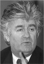

2008 yılında Sırbistan’daki bir belediye otobüsünde yakalanana kadar Radovan Karadzic (1945–) Balkanlar’ın en çok aranan adamıydı. Bosnalı Sırpların lideri olan Karadziç, 1990’larda Balkanlar’da yaşanan gerilimler sırasında binlerce Bosnalı Müslüman’ın ölüm emrini vermişti. Karadziç şu anda uluslararası bir mahkemede işlediği savaş ve soykırım suçları için yargılanmayı bekliyor.

Savcının iddiasına göre Karadziç, Bosna Savaşı sırasında Saraybosna’nın bombalanması emrini vermiş ve binlerce sivilin ölümüne neden olmuştu. 1995 yılında Srebrenitsa kasabasında 8 binden fazla silahsız erkek ve çocuğun öldürülmesini organize etmişti. Bu, Avrupa’da II. Dünya Savaşı’nda beri yaşanan en korkunç kitlesel ölümdü.
Eski Yugoslavya’da doğan Karadziç, psikoloji eğitimi görmüş ve paranoya üzerinde uzmanlaşmıştı. New York City’deki Columbia Üniversitesi’nde bir yıl geçirdi. 1970 ve 1980’lerde Yugoslavya’daki bir psikiyatri hastanesinde çalıştı. Aynı zamanda bir roman yazarı ve şair olan Karadziç’in çeşitli eserleri de basılmıştı.
1980’lerin sonuna doğru bir Sırp milliyetçisi olarak politikaya atıldı. 1990’larda Yugoslavya parçalanırken Bosnalı Sırplar’ın lideri olarak seçildi. Bosnalı Sırplar, komşu Sırbistan’ın yardımıyla Müslüman Boşnak ve Hırvatlar’a karşı etnik temizlik kampanyası başlattılar. Bu kampanya Srebrenitsa katliamı ile doruk noktasına ulaştı.
Savaşa son veren Dayton Barış Anlaşması’nın ardından Karadziç savaş suçlarından dolayı sorumlu tutuldu. Hemen ardından kaçmaya başladı. Sırbistan’ın başkenti Belgrad’a gitti. Dragan David Dabic takma adını kullanıyordu. Uzun ve dağınık bir sakal bıraktı. Alternatif tıpla ilgilenmeye ve “insan kuantum enerjisi” üzerine çalışmaya başladı. Sırbistan’ın Healthy Life isimli dergisinde yazarlık yapıyordu. Yerini tespit etmek için yürütülen uluslararası insan avı, on iki yıl boyunca başarısızlıkla sonuçlandı. Karadziç’in rahatça Avusturya’ya gidip yakalanmadan futbol maçları bile izlediği söyleniyordu.
21 Temmuz 2008 tarihinde yakalanınca pek çok Sırp protesto gösterisi düzenledi. Onu bir kahraman olarak görüyorlardı. Buna rağmen birkaç gün sonra Lahey’e gönderildi.
Ek Bilgiler
1- Srebrenitsa kurbanları için yapılmış bir soykırım anıtı, ABD eski başkanı Bill Clinton (1946–) tarafından 2003 yılında açıldı.
2- Karadziç’in yakalanmasının ardından günümüzde en çok aranılan savaş suçlusu onun generali Ratko Mladiç’tir (1942–). ABD hükümeti onun yakalanmasına yardımcı olanlara 5 milyon dolar ödül vermeyi taahhüt etti.
3- Karadziç çeşitli şiir kitapları yazdı. Saklandığı sırada bir Sırp yayıncıya bir roman taslağı göndermeyi başardı. Kitap 2004 yılında yayınlandı.